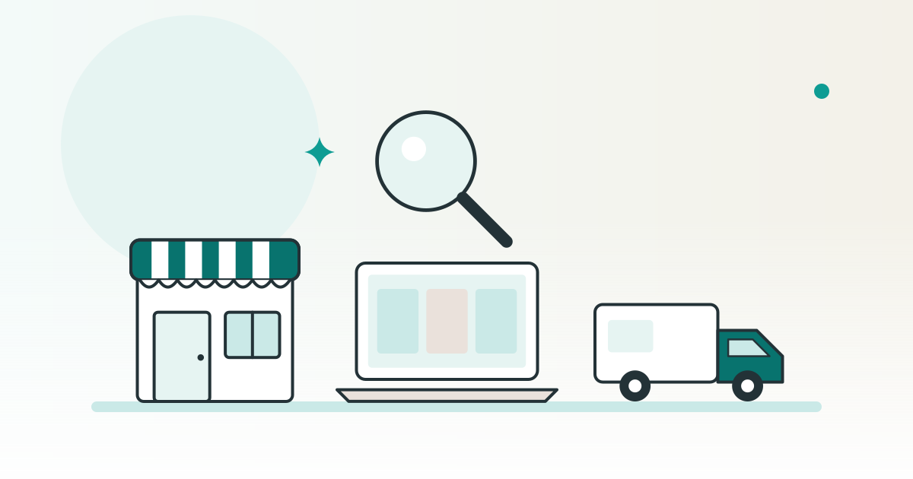

SHOPKIT コラム
個人が買いやすい事業・業種とは？小さく始めやすい条件

個人で事業を買うとき、買う値段だけで候補を決めず、今の経営者が抜けた後の仕事も確かめましょう。業種の名前に順位を付ける方法ではなく、自分の経験・時間・場所・支出に合うかを見る条件を整理します。
この記事は、完成品のネットショップを販売している SHOPKIT が書いています。
個人M&Aで「おすすめの業種」は、自分の条件から考える
個人M&Aの候補を探す際は、会社全体の取得なのか、事業の一部を引き継ぐ話なのかも相談先へ確かめてください。ここでは、候補の仕事を引き受けられるかを考えます。
たとえば、日中に連絡できるか、現地へ通えるか、今の担当者から仕事を教わる時間を取れるかを書き出してみましょう。買うための準備と、買った後も続けるための準備を並べると、売り手に聞きたいことが具体的になります。
中小機構の第三者承継支援の説明では、創業を希望する人が既存事業を引き継ぐ際、経営方針の調整が必要になることや、既存店舗の場所・規模による制約を挙げています。個人保証の債務（経営者が個人で引き受けている保証）の引き継ぎが必要になる場合がある点も示しています。保証があるかどうかと、その扱いは、契約の前に専門家へ確かめてください。自分の希望に合わせて何を変えられるかも、公的な引継ぎ支援の説明を入口に確認しましょう。
新しく始める仕事の条件を考える場合と、今ある仕事や関係を受け取る場合は、質問を分けます。既存の事業なら、続けるために残したいことと、自分が変えたいことを売り手へ伝える準備もしてみてください。
関連：独立しやすい業種とは？一人・小さな元手で始めやすい条件
引き継げるかは、人・許認可・設備・記録で確かめる
候補の業種を比べる前に、その事業で誰が何をしているかを見せてもらいましょう。以下は、業種の優劣を決める基準ではなく、自分が引き受けられる範囲を確認するための質問です。
| 確かめる条件 | 売り手や相談先への質問 | 照合したい資料 |
|---|---|---|
| 今の担当者への依存 | 今の経営者だけができる仕事は何か。手順を説明し、別の人が試せるか | 作業一覧、担当、教わる内容と期間 |
| 資格・許認可の条件 | どの業務に、誰の資格やどの許可が関わるか。持ち主が変わる場合の確認先はどこか | 業務の説明、現在の資格・許可の書類、担当窓口の案内 |
| 場所・設備の負担 | 必要な場所と道具は何か。保管・修理・更新を自分が手配できるか | 設備の一覧と状態、利用の契約、支払いの記録 |
| 数字と仕事の対応 | 売上や支出を、どの期間のどの記録で確かめられるか。対応する注文や作業は何か | 注文・入出金・請求の記録と、担当者の説明 |
今の経営者の技術や人間関係に仕事が集中している状態を、属人性が高いと呼ぶことがあります。候補を見るときは、教わればできそうかを想像するだけで終えず、どの作業をどう説明してもらうかを相談しましょう。
許認可は数だけを見ず、自分の担当する業務や引き継ぐ形に合うか、担当窓口へ確認します。設備も小さければよいと決めず、置く場所、更新の支出、日々の点検を引き受けられるかを見てください。
記録の見方が分からない場合は、分からない項目をそのまま相談先へ渡しましょう。数字を見せてもらったことと、その範囲や意味を理解できたことを分けて考えます。
未経験の仕事は、教わり方と残る担当者まで見る
未経験の仕事を含む候補では、分からない作業と、それを誰から教わるかを先に並べてみましょう。業種名を見て難しさを決めるより、購入後の担当表を作るつもりで質問します。
- 技術を覚える必要がある場面：日々の作業だけでなく、判断に迷う注文や不具合への対応も、誰に教わるかを確認します。
- 今の人間関係が関わる場面：顧客や取引先とのやり取りを誰が担っているか、その人が抜ける場合にどう説明するかを相談します。
- 現場への対応がある場面：訪問、対面の接客、設備の不具合など、現地へ行く必要がある仕事を挙げてもらいます。
- 人の仕事を引き継ぐ場面：残る担当者と業務範囲、連絡する時間、休みや欠員が出たときの相談先を確かめます。
「教えてもらえる」という説明を受けたら、内容、担当者、期間、質問の方法を具体化してください。実際の作業を説明してもらう機会を相談し、自分が説明できない箇所を確認メモへ残します。
中小機構は、引継ぎの条件調整や書類作成に必要な専門家の紹介を案内しています。また、紹介された民間のM&A支援機関による支援は有償と説明しています。自分で理解できない条件は、支援の範囲と費用を確認して相談しましょう。根拠は第三者承継支援の案内で確認できます。
関連：スモールM&Aとは？会社員が副業で小さく買うときの考え方
Webサイト・ネットショップも、画面の外の仕事をたどる
ネットの事業を候補にするなら、管理画面を使う仕事と、それ以外の仕事を分けて聞いてみましょう。自宅でできるか、時間を選べるかは、具体的な担当と対応の条件に沿って確かめたい点です。
Webサイトなら、誰が文章や画像を用意し、問い合わせや更新に対応しているかを確認します。広告や検索から人が来るという説明があれば、その根拠となる期間と記録、継続している作業を見せてもらいましょう。
ネットショップなら、注文確認、仕入れ、保管、梱包、発送、お客様への連絡を順にたどります。仕入れ先や発送を担う相手へ、持ち主が変わった後の取引条件を確認する方法も相談してください。
ドメインはサイトの住所に当たるもので、アカウントは各サービスを使うための登録です。どれを受け取れるか、名義変更や申請などが必要かは、対象の契約と各サービスの規約・窓口で確かめましょう。顧客情報や画像・文章を受け取る範囲も、専門家への相談事項に残します。
自分の予定と合うかを見るには、定期的な仕事に加え、欠品・配送の遅れ・画面の不具合が起きた場合の対応を質問してみてください。返事がない項目を、対応できるという意味に置き換えないことが大切です。
候補を絞る前に、自分に合うかを質問にする
候補ごとに、次の質問への答えと、確認した資料を並べてみましょう。全部に答えが出ていなくても、何を調べれば次へ進めるかを整理できます。
- 今の担当者が抜けたら、誰が何をするか
自分が引き受ける仕事、教わる仕事、他の人へ依頼する必要がある仕事を分けて書き出します。
- 自分の時間・場所・支出の上限に合うか
日中の連絡や現地への移動、設備の管理、購入後の支払いを、自分の予定と照合します。
- 引き継げる条件を、どこまで確かめたか
許認可、取引先、利用するサービス、必要な記録のうち、返事がないものと確認先を残します。
- どんな条件なら、検討を保留するか
仕事の説明を受けられない、担当が決まらない、支出の範囲が不明といった場面で、何を確認してから判断するかを決めておきます。
中小機構のポータルでは、創業を考える人と、後継者がいない会社や個人事業主をつなぐ後継者人材バンクを案内しています。既存事業を検討する際の相談先を探す入口として、事業承継・引継ぎポータルを確認できます。紹介や成立を前提にせず、自分の希望と相談対象を窓口へ伝えましょう。
関連：個人で小さな事業を買う方法｜探し方から引き継ぎまでの流れ
新しく販売を始めるための選択肢も分けて考える
既存事業を引き継ぐ場合は、今ある仕事や関係を続けられるかを確かめます。それとは別に、お店の準備を受け取り、新しく販売を始める選択肢もあります。
SHOPKITは、小さく買って始める選択肢のひとつとして、完成品のネットショップを販売しています。2026年10月15日時点のサービスページでは、副業・独立開業・新規事業に使えると案内しています。用途はサービスページで確認できます。
どの始め方でも、自分が日々行う仕事と確認先を具体的にしてから比べましょう。候補の名前より先に、引き受ける内容を自分の言葉で説明できるかを確かめてみてください。
※ SHOPKITの用途の説明は、2026年10月15日時点のサービスページの記載です。公的資料も同日に確認しました。個別の契約・資格・許認可・サービスの利用条件は、対象の書面を担当窓口や専門家へ示して確認してください。